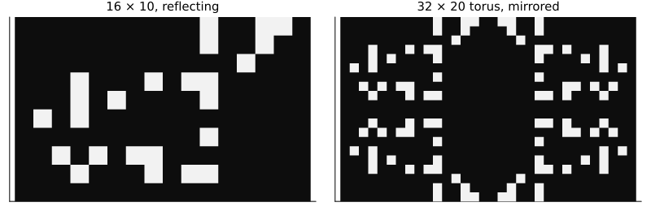
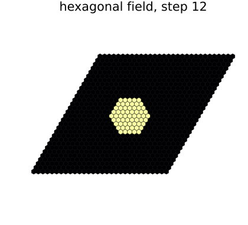

Geometries
Simon Frost
- Overview
- Square and hexagonal tori
- Periodic edges are quotients
- Reflecting edges are quotients by reflections
- Constant edges are pinned cells
- Graphs
- Composites on any geometry
- A category of spaces
- Summary
Overview
The earlier vignettes study cellular automata over groups: the cells are the elements of a group, and every cell reads the same pattern of neighbours. Real models run on other geometries too: hexagonal grids, fields with reflecting or fixed edges, networks of patches. This vignette represents all of them in one way, and relates them by maps.
A space here is a finite set of cells, each with an ordered list of neighbours. When every cell has k neighbour slots, that is a coalgebra of X ↦ X^k: a set with k functions to itself, one for each slot. A graph, whose cells have lists of different lengths, is a coalgebra of the list functor. A map of spaces sends cells to cells and each neighbour to the corresponding neighbour of the image. Pulling a configuration back along such a map, reading each cell’s value at its image, commutes with every cellular automaton given by a local rule: running the rule and then pulling back is the same as pulling back and then running the rule. In the language of category theory, a local rule is a natural transformation between configuration functors on the category of spaces.
This is a research extension, beyond the papers the package implements. Each geometry below is checked against CellularAutomataCore, which runs the same rules on its own spaces.
ENV["GKSwstype"] = "100"
using CategoricalCellularAutomata
using CellularAutomataCore: CellularAutomataCore, CAProblem, solve, ReferenceBackend, Torus,
Grid, HexGrid, GraphSpace, Life, Hexagonal, Moore, VonNeumann,
Reflecting, Constant, Periodic, LocalRule, GraphNeighbours,
CAModel, neighbourhood_offsets
using Catlab: @relation, compose, id, dom
using Plots
using Random
core_step(rule, space, u) = solve(CAProblem(rule, u, 1; space); backend=ReferenceBackend()).u[end]Square and hexagonal tori
neighbourhood_space turns any CellularAutomataCore space and neighbourhood into a space of this kind, with the neighbours in the order the core gives them to a rule. A square torus and a hexagonal one have the same cells, the elements of the group Z_8 × Z_6; they differ only in which elements a cell reads. Both are Cayley spaces of that group, marked with different generators:
G = TorusGroup(8, 6)
square = cayley_space(G, [(1, 0), (-1, 0), (0, 1), (0, -1)])
hexagonal = cayley_space(G,
[Tuple(o) for o in neighbourhood_offsets(Hexagonal(1), HexGrid(8, 6))])
(square=square, hexagonal=hexagonal,
same_as_core=hexagonal == neighbourhood_space(HexGrid(8, 6), Hexagonal(1)))(square = NeighbourhoodSpace(48 cells, 4 neighbour slots), hexagonal = NeighbourhoodSpace(48 cells, 6 neighbour slots), same_as_core = true)The geometry is the marking, not the group. Life on the hexagonal space, stepped with apply_local, is the core’s hexagonal Life:
u = rand(Xoshiro(1), 0:1, 8, 6)
apply_local(Life(), hexagonal, vec(u)) == vec(core_step(Life(), HexGrid(8, 6), u))trueA cellular automaton over a group, as in the earlier vignettes, is the special case: its memory set marks the group, and neighbourhood_space(τ) is its Cayley space.
Periodic edges are quotients
A 12 × 8 torus covers a 6 × 4 one: send each cell to its position modulo (6, 4). Every cell’s neighbours go to the neighbours of its image, so covering is a map of spaces, and a configuration on the small torus pulls back to a periodic one on the large torus. Running a rule on either side and comparing:
f = covering(Torus(12, 8), Torus(6, 4), Moore(1))
x = rand(Xoshiro(2), 0:1, 24)
(is_morphism=is_morphism(f),
commutes=apply_local(Life(), f.dom, pullback(f, x)) ==
pullback(f, apply_local(Life(), f.codom, x)))(is_morphism = true, commutes = true)Periodic edges are therefore the quotient of a larger (in the limit, infinite) lattice by translations: a cellular automaton on a torus is the same automaton on the plane, restricted to periodic configurations.
Reflecting edges are quotients by reflections
A lattice whose edges mirror the cells inside (Reflecting in the core) is also a quotient, of the torus with each side doubled: on the second half of an axis, a cell goes to its mirror image. Neighbours on the mirrored half lie in the opposite direction, so the map sends each neighbour slot to its reflection. reflection_fold records those permutations, and only rules that do not care about the direction of their neighbours, such as Life, commute with pulling back along it.
space = Grid(16, 10; boundary=Reflecting())
fold = reflection_fold(space, Moore(1))
u = rand(Xoshiro(3), 0:1, 16, 10)
reflecting = solve(CAProblem(Life(), u, 20; space))
doubled = solve(CAProblem(Life(), reshape(pullback(fold, vec(u)), 32, 20), 20;
space=Torus(32, 20)))
all(t -> vec(doubled.u[t]) == pullback(fold, vec(reflecting.u[t])), eachindex(reflecting.u))trueTwenty steps of Life with reflecting edges are twenty steps on the doubled torus from the mirrored start, read on one quarter of it:
plot(heatmap(reflecting.u[end]'; c=:grays, colorbar=false, title="16 × 10, reflecting"),
heatmap(doubled.u[end]'; c=:grays, colorbar=false, title="32 × 20 torus, mirrored");
layout=(1, 2), size=(800, 260), aspect_ratio=1, ticks=false, yflip=true,
titlefontsize=10)
A rule that does care, copying the neighbour on one side, does not descend:
copy_one = (c, nbrs) -> nbrs[4]
vn = reflection_fold(Grid(7, 5; boundary=Reflecting()), VonNeumann(1))
x = rand(Xoshiro(4), 0:1, 35)
apply_local(copy_one, vn.dom, pullback(vn, x)) ==
pullback(vn, apply_local(copy_one, vn.codom, x))falseConstant edges are pinned cells
A lattice whose edges hold a constant (Constant in the core) gets one extra cell for each constant, pinned to it: every neighbour beyond the edge is that cell, and its own neighbours are itself. The space is then a pointed extension of the cells inside.
box = Grid(9, 7; boundary=(Constant(1), Constant(0)))
S = neighbourhood_space(box, Moore(1))
u = rand(Xoshiro(5), 0:1, 9, 7)
(space=S, pinned=S.pinned,
same_as_core=apply_local(Life(), S, vec(u)) == vec(core_step(Life(), box, u)))(space = NeighbourhoodSpace(63 cells, 8 neighbour slots, 2 pinned), pinned = Dict{Int64, Any}(64 => 0, 65 => 1), same_as_core = true)Graphs
A GraphSpace from the core is a space whose cells have lists of different lengths. Here are patches joined to their neighbours along a ring and by a few long links, and a majority rule:
links = [(i, mod1(i + 1, 30)) for i in 1:30]
append!(links, [(1, 16), (5, 20), (9, 25)])
patches = GraphSpace(30, links)
majority = LocalRule(GraphNeighbours()) do c, n, ctx
k = 2count(==(1), n)
return k > length(n) ? 1 : k < length(n) ? 0 : c
end
P = neighbourhood_space(patches)
x = rand(Xoshiro(6), 0:1, 30)
(space=P, same_as_core=apply_local(majority, P, x) == core_step(majority, patches, x))(space = NeighbourhoodSpace(30 cells, neighbour lists of (2, 3) cells), same_as_core = true)Composites on any geometry
The models composed in the previous vignette resolved their neighbourhoods on a square lattice. oapply now takes the space the composite will run on: models with hexagonal neighbourhoods compose on a hexagonal grid, and models that read GraphNeighbours() on a graph. Here is the crop and aphid model of that vignette on hexagonal cells:
function crop_and_aphids(nbhd)
crop = CAModel(LocalRule(nbhd) do c, n, ctx
return (host=c.host == 1 || c.aphid >= 2 ? Int8(1) : Int8(0),
aphid=c.aphid)
end; name=:crop, states=(host=Int8(0), aphid=Int8(0)))
aphids = CAModel(LocalRule(nbhd) do c, n, ctx
a = c.host == 1 ? Int8(3) :
Int8(max(0, max(c.aphid, maximum(m.aphid for m in n)) - 1))
return (host=c.host, aphid=a)
end; name=:aphids, states=(host=Int8(0), aphid=Int8(0)))
d = @relation (host, aphid) begin
crop(host, aphid)
aphids(host, aphid)
end
return d,
(crop=OpenCAModel(crop; reads=[:aphid]), aphids=OpenCAModel(aphids; reads=[:host]))
end
d, boxes = crop_and_aphids(Hexagonal(1))
hexfield = HexGrid(30, 30)
model = oapply(d, boxes; space=hexfield)
host = zeros(Int8, 30, 30)
host[15, 15] = 1
sol = solve(CAProblem(model, (host=host,), 12; space=hexfield))
plot(sol; snapshot=length(sol.u), layer=:host, colorbar=false,
title="hexagonal field, step 12", size=(420, 380))
The infection spreads as a hexagon, the shape of the balls of the hexagonal neighbourhood.
A category of spaces
Maps of spaces compose: cells go through both maps, and the slot permutations compose with them. With identities, neighbourhood spaces and their maps form a category, an instance of Catlab’s ThCategory, and pulling back configurations is a contravariant functor out of it. A covering of a 24 × 16 torus over the 12 × 8 one, followed by the 12 × 8 torus’s covering of the 6 × 4 one, is the covering of the 6 × 4 torus by the 24 × 16 one; and a covering followed by a fold is again a map of spaces:
a = covering(Torus(24, 16), Torus(12, 8), Moore(1))
b = covering(Torus(12, 8), Torus(6, 4), Moore(1))
fold6 = reflection_fold(Grid(6, 4; boundary=Reflecting()), Moore(1))
h = compose(a, fold6)
x = rand(Xoshiro(7), 0:1, 24)
(coverings_compose=compose(a, b) == covering(Torus(24, 16), Torus(6, 4), Moore(1)),
identity=compose(id(dom(a)), a) == a, composite_is_a_map=is_morphism(h),
pullback_is_functorial=pullback(h, x) == pullback(a, pullback(fold6, x)))(coverings_compose = true, identity = true, composite_is_a_map = true, pullback_is_functorial = true)Summary
| geometry | as a space | relation to the plane |
|---|---|---|
| square or hexagonal torus | Cayley space of Z_n × Z_m, marked by the neighbourhood | quotient by translations (covering) |
| reflecting edges | lattice whose edge cells read their mirror images | quotient of a doubled torus by reflections (reflection_fold), for symmetric rules |
| constant edges | lattice plus a pinned cell for each constant | pointed extension |
| graph | lists of varying length | none: a space in its own right |
In each case a local rule is the same thing, a function of a cell and its neighbours, and the maps between spaces carry configurations and the rule’s dynamics together.